Indicadores sociais relevantes para análise territorial portuária
Foram aplicados diferentes modelos computacionais para análise temporal dos indicadores portuários e educacionais da região Itaqui-Bacanga, utilizando séries históricas e técnicas estatísticas preditivas.
A estrutura foi organizada por área temática e por técnica de modelagem, permitindo futuras expansões com novos algoritmos e comparações entre modelos preditivos.
Esta seção apresenta os modelos aplicados aos indicadores de movimentação portuária do Porto do Itaqui.
O modelo Holt-Winters foi aplicado para modelagem de séries temporais da movimentação portuária utilizando suavização exponencial com tendência aditiva, permitindo estimar a evolução futura dos indicadores históricos.
O método Holt-Winters prioriza o comportamento temporal da série, ajustando automaticamente nível e tendência ao longo dos anos.
Smoothing Level: 0,927109
Smoothing Trend: 0,000247
Nível Inicial: 685,461695
Tendência Inicial: 20,313616
O modelo indica continuidade do crescimento da movimentação portuária, mantendo tendência positiva ao longo dos próximos anos.
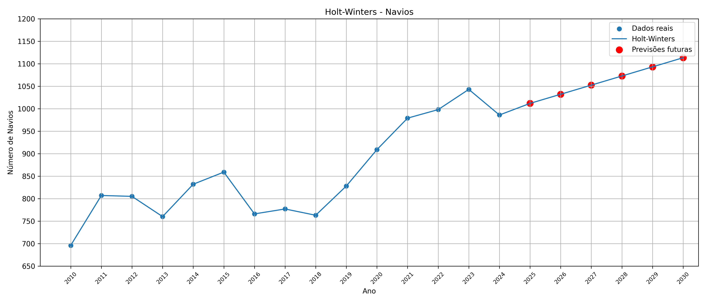
Fonte: Elaborado pelo autor (2026).
Smoothing Level: 0,665000
Smoothing Trend: 0,000100
Nível Inicial: 11.561.766,60
Tendência Inicial: 1.191.905,65
O modelo projeta crescimento contínuo da carga movimentada, mantendo trajetória ascendente até 2030.
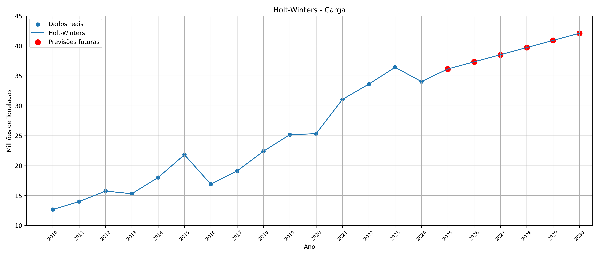
Fonte: Elaborado pelo autor (2026).
| Ano | Navios Previstos | Carga Prevista (t) |
|---|---|---|
| 2025 | 1011 | 36.140.209 |
| 2026 | 1032 | 37.332.665 |
| 2027 | 1052 | 38.525.121 |
| 2028 | 1072 | 39.717.577 |
| 2029 | 1093 | 40.910.033 |
| 2030 | 1113 | 42.102.490 |
Durante o treinamento do modelo, o algoritmo apresentou aviso de convergência ("Optimization failed to converge"). Esse comportamento indica que o procedimento numérico não encontrou plenamente os parâmetros ótimos de ajuste da série temporal dentro dos critérios internos de convergência do método.
Apesar disso, o modelo conseguiu gerar previsões coerentes e compatíveis com o comportamento histórico da movimentação portuária, permitindo sua utilização para fins de análise exploratória e avaliação de tendência temporal.
O modelo ARIMA (AutoRegressive Integrated Moving Average) foi aplicado para previsão de séries temporais, combinando componentes autorregressivos, de média móvel e diferenciação para capturar padrões em séries não estacionárias. No caso do Porto do Itaqui, utilizou-se ARIMA(0,1,0) para o número de navios e ARIMA(1,0,1) para a carga movimentada.
Modelo: ARIMA(0,1,0)
AIC: -32,777
O modelo prevê número constante de navios (986) no horizonte, com intervalo de confiança ligeiramente crescente.
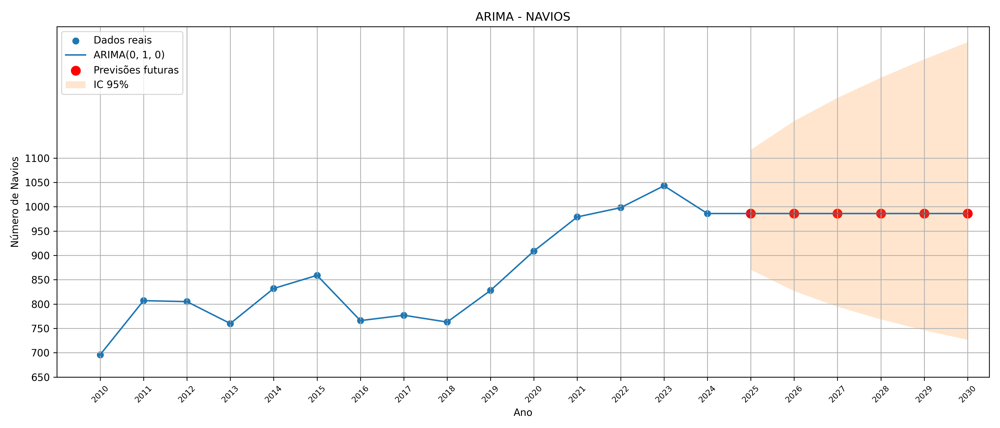
Fonte: Elaborado pelo autor (2026).
Modelo: ARIMA(1,0,1)
AIC: -15,254
As previsões indicam crescimento gradual da carga movimentada, com faixas de confiança ampliando ao longo do tempo.
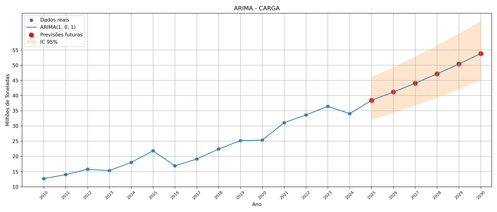
Fonte: Elaborado pelo autor (2026).
| Ano | Navios Previstos | IC 95% Navios | Carga Prevista (t) | IC 95% Carga |
|---|---|---|---|---|
| 2025 | 986 | 870 – 1117 | 38.420.869 | 32.041.460 – 46.070.407 |
| 2026 | 986 | 827 – 1176 | 41.147.316 | 34.318.745 – 49.334.602 |
| 2027 | 986 | 795 – 1224 | 44.039.641 | 36.734.795 – 52.797.082 |
| 2028 | 986 | 768 – 1265 | 47.106.023 | 39.296.465 – 56.467.608 |
| 2029 | 986 | 746 – 1303 | 50.354.928 | 42.010.848 – 60.356.285 |
| 2030 | 986 | 727 – 1338 | 53.795.113 | 44.885.285 – 64.473.563 |
Esta seção apresenta os modelos aplicados aos indicadores educacionais regionais da área Itaqui-Bacanga.
O modelo Holt-Winters foi aplicado aos indicadores educacionais regionais utilizando suavização exponencial com tendência aditiva, permitindo analisar o comportamento temporal das séries históricas e realizar projeções futuras até 2030.
O método Holt-Winters ajusta automaticamente o nível e a tendência da série, priorizando o comportamento temporal dos dados ao longo dos anos.
Smoothing Level: 0,9999999754
Smoothing Trend: 0,0000000096
Nível Inicial: 22611,99
Tendência Inicial: -261,35
O modelo indica tendência contínua de redução das matrículas escolares ao longo dos próximos anos.
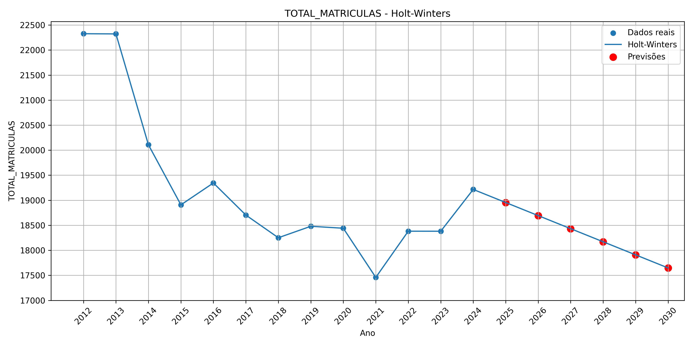
Fonte: Elaborado pelo autor (2026).
Smoothing Level: 0,9380120014
Smoothing Trend: 0,0000000000
Nível Inicial: 30,39
Tendência Inicial: 2,55
O modelo projeta aumento contínuo da quantidade de escolas com acesso à internet na região.
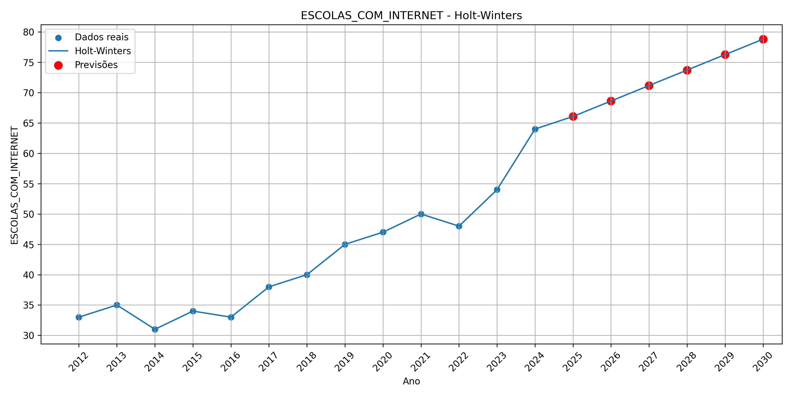
Fonte: Elaborado pelo autor (2026).
| Ano | Total Matrículas | Total Docentes | Escolas com Internet |
|---|---|---|---|
| 2025 | 18.954,65 | 1122,42 | 66,07 |
| 2026 | 18.693,31 | 1138,02 | 68,62 |
| 2027 | 18.431,96 | 1153,62 | 71,17 |
| 2028 | 18.170,61 | 1169,21 | 73,72 |
| 2029 | 17.909,27 | 1184,81 | 76,27 |
| 2030 | 17.647,92 | 1200,41 | 78,82 |
Os modelos Holt-Winters foram treinados utilizando suavização exponencial aditiva sem componente sazonal, considerando apenas tendência temporal dos indicadores educacionais regionais.
Para os indicadores educacionais dos bairros de Itaqui-Bacanga, aplicou-se o modelo ARIMA de maneira similar ao Porto do Itaqui, combinando componentes autorregressivos, de média móvel e diferenciação para capturar padrões em séries não estacionárias.
As matrículas apresentam estabilidade, conforme observado historicamente.
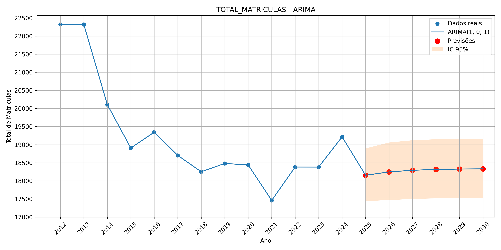
Fonte: Elaborado pelo autor (2026).
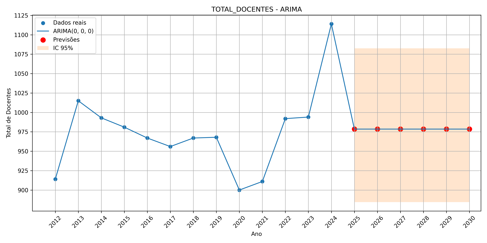
Fonte: Elaborado pelo autor (2026).
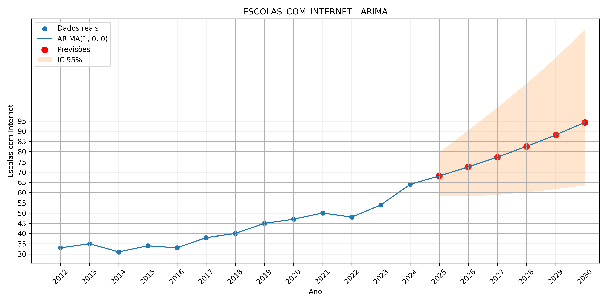
Fonte: Elaborado pelo autor (2026).
| Ano | Matrículas | Docentes | IC 95% Docentes | Escolas com Internet | IC 95% Escolas com Internet |
|---|---|---|---|---|---|
| 2025 | 18.154 | 979 | 885 – 1082 | 68 | 58 – 80 |
| 2026 | 18.247 | 979 | 885 – 1082 | 73 | 58 – 90 |
| 2027 | 18.293 | 979 | 885 – 1082 | 77 | 59 – 102 |
| 2028 | 18.315 | 979 | 885 – 1082 | 83 | 60 – 113 |
| 2029 | 18.326 | 979 | 885 – 1082 | 88 | 62 – 126 |
| 2030 | 18.332 | 979 | 885 – 1082 | 94 | 64 – 140 |
Estes resultados demonstram as projeções ARIMA para os indicadores estudados. A seção ARIMA segue o mesmo padrão de formatação das demais, garantindo coesão visual no dashboard.
O algoritmo K-Means foi utilizado para agrupar os bairros da região Itaqui-Bacanga com base em indicadores educacionais, permitindo identificar localidades com características semelhantes. A análise resultou na formação de três grupos distintos, representando bairros com maior infraestrutura educacional, perfil intermediário e maior vulnerabilidade educacional. Essa abordagem facilita a identificação de regiões prioritárias para ações de planejamento e formulação de políticas públicas.
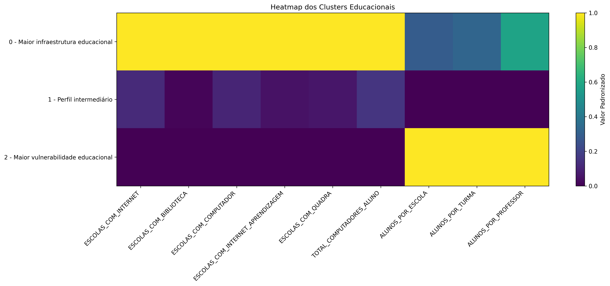
Fonte: Elaborado pelo autor (2026).
Após a formação dos agrupamentos pelo algoritmo K-Means, uma Árvore de Decisão foi empregada para interpretar os critérios responsáveis pela separação dos bairros entre os diferentes clusters. O modelo identificou que os indicadores "Escolas com Quadra" foram os atributos mais relevantes para a classificação dos grupos, permitindo uma interpretação objetiva dos fatores que caracterizam cada perfil educacional.
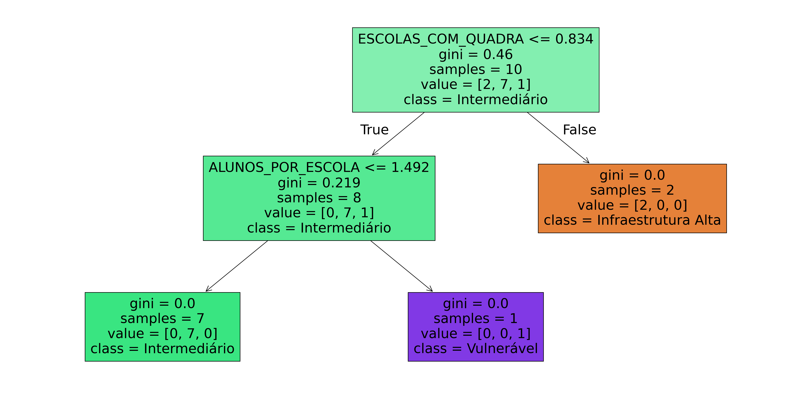
Fonte: Elaborado pelo autor (2026).
A Análise de Componentes Principais (PCA) foi utilizada para reduzir a dimensionalidade dos dados e representar, em duas dimensões, a distribuição dos bairros segundo os indicadores educacionais analisados. A projeção facilita a visualização dos agrupamentos obtidos pelo K-Means, evidenciando a proximidade entre bairros com características semelhantes e a separação entre aqueles pertencentes a diferentes clusters.
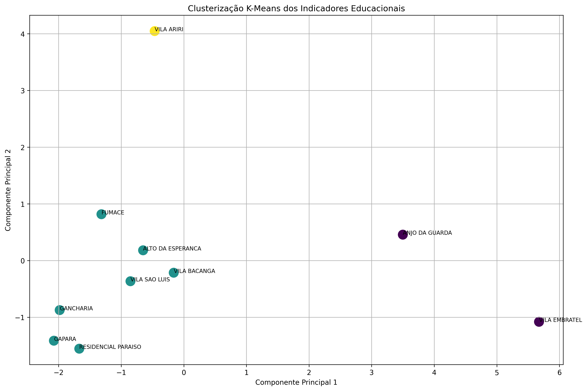
Fonte: Elaborado pelo autor (2026).